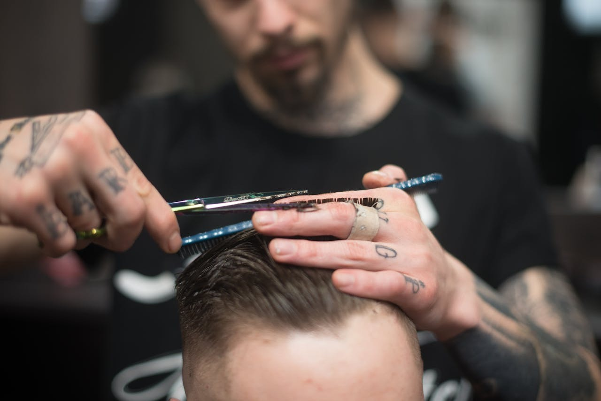
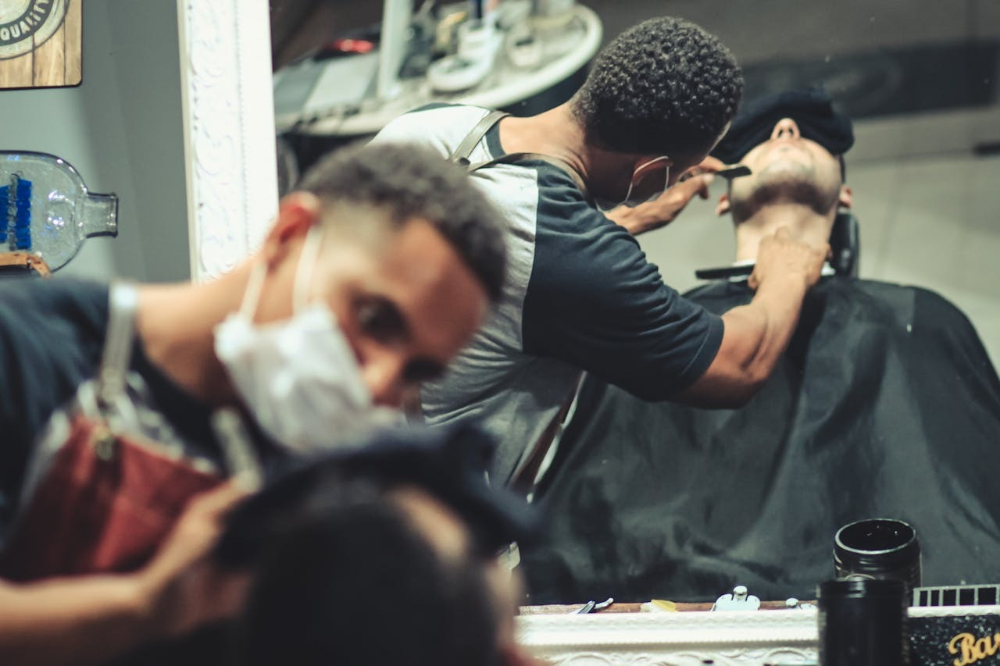
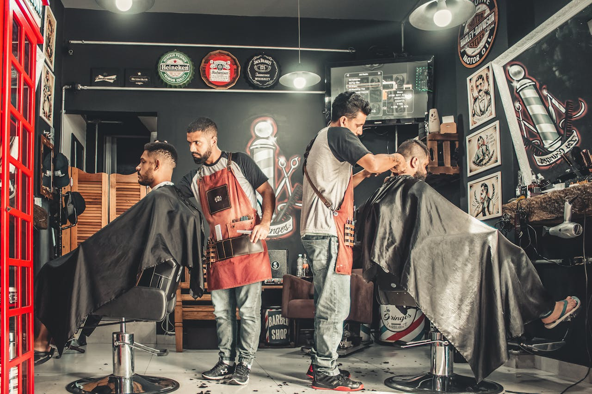

Keskin Hatlar Erkek Berberi
Keskin Hatlar Erkek Berberi, modern erkeklerin ihtiyaçlarına yönelik birinci sınıf hizmetler sunar. Klasik saç kesimi ve sakal tıraşının yanı sıra, trend saç modelleri, sakal şekillendirme ve cilt bakımı gibi özel hizmetler sağlar. Profesyonel ekip, her müşterinin tarzını ve ihtiyaçlarını dikkate alarak kişiye özel çözümler üretir. Şık ve rahat ortamı, kaliteli ürünleri ve güler yüzlü hizmetiyle Keskin Hatlar, kendinizi yenilemek için doğru bir adres.
Rezerve Et
Beyefendi Grooming Erkek Kuaförü
Beyefendi Grooming, geleneksel berberlik hizmetlerini modern bir dokunuşla sunar. Sıcak havlu terapisiyle sakal tıraşı, detaylı saç kesimi ve saç bakımı gibi hizmetler, profesyonel bir ekiple gerçekleştirilir. Ayrıca özel bakım isteyenler için yüz maskeleri ve kaş düzenleme gibi ek hizmetler de sunulur. Dinlendirici atmosferi ve şık tasarımı ile bir berberden fazlasını sunan Beyefendi, özel bir deneyim arayanların vazgeçilmez durağıdır.
Rezerve Et


Asil Tarz Erkek Berberi
Klasik şıklık ve güncel trendleri bir araya getiren Asil Tarz Erkek Berberi, erkek bakımını bir sanata dönüştürüyor. Klasik saç ve sakal kesimi, saç boyama ve keratin bakımı gibi kapsamlı hizmetleriyle her yaştan erkeğin tercihidir. Özel günler için ekstra özenle yapılan stil çalışmaları, her detayda kaliteyi hissettirir. Misafirlerine sunduğu kahve ikramı ve keyifli sohbet ortamıyla sadece bir berber değil, aynı zamanda bir buluşma noktasıdır.
Rezerve Et